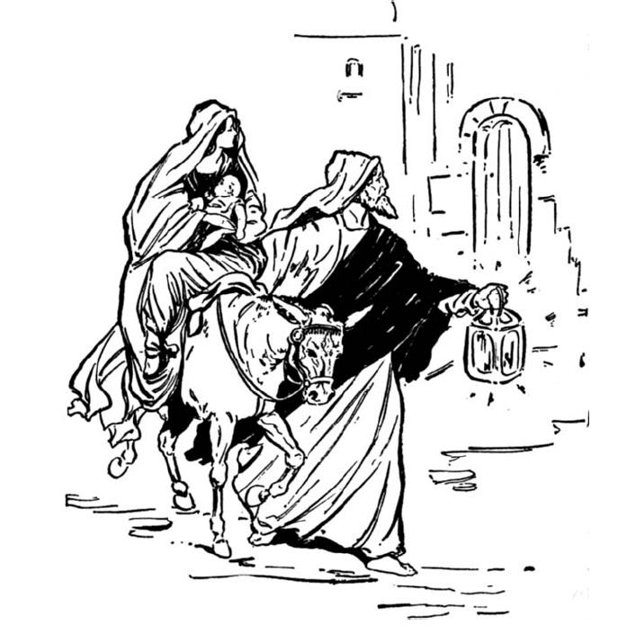

Read
the lessons at the Vanderbilt Library website:
http://divinity.lib.vanderbilt.edu/lectionary/AChristmas/aChristmas2.htm
Elementary School Pew-work
F L E E H A D M M T L
|
(Matthew 2:13) Now after they had left, an angel of the Lord
appeared to Joseph in a dream and said, "Get up, take the
child and his mother, and flee to Egypt, and remain there until I
tell you; for Herod is about to search for the child, to destroy
him." (NRSV) |
Word List |
from www.geocities.com/lectionarypuzzles/ free to distribute for free with this notice. Words are in a straight line left to right or top to bottom |
||
1. Who told Joseph to take the child and his mother to Egypt?
_____________________________________________________________
2. How long did the family stay in Egypt?
_____________________________________________________________
3.Where did the family go in Palestine?
_____________________________________________________________